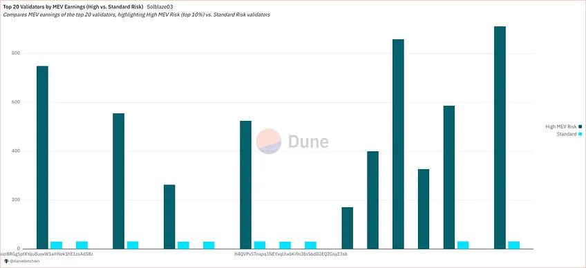
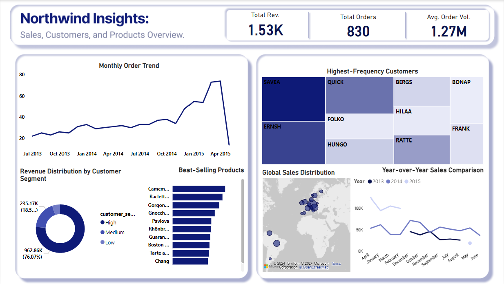
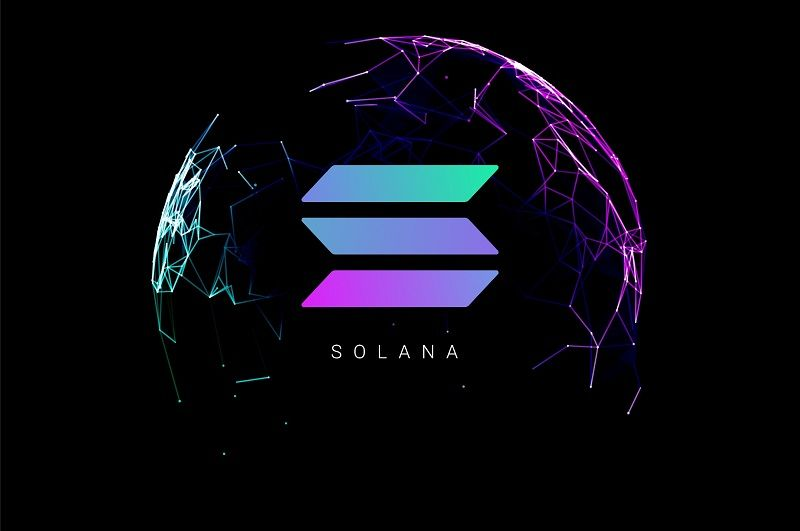

About
Data Analyst passionate about turning complex data into actionable growth insights. Skilled in SQL, Python, and data visualization tools like Tableau and Dune Analytics. I analyze user behavior and product performance across diverse datasets, including blockchain and transactional systems, to drive key metrics. Sharing insights via my newsletter, Onchain With Daniel. Open to opportunities in fintech, SaaS, consumer analytics, and emerging technologies.
Skills & Focus Areas
📊 Data Analysis
I uncover powerful insights from diverse datasets through deep exploration, pattern recognition, and storytelling that drives real decisions (with experience in transactional systems like blockchain and traditional sources).
Tools: SQL, Python,Excel, Dune Analytics, Pandas
📈 Data Visualization
I build clear, impactful visualizations and dashboards that turn complex metrics into easy-to-understand stories for teams and stakeholders (applicable to high-volume data like financial or user activity).
Tools: Tableau, Power BI, Matplotlib/Seaborn
🔍 Data Manipulation
I clean, transform, and wrangle messy data from multiple sources to prepare it for reliable analysis and modeling (handling formats like APIs, logs, and structured databases).
Tools: Python (Pandas, NumPy), SQL, Excel, API handling
🤖 Automation & Workflows
I create automated pipelines and workflows to monitor activity, generate reports, and trigger alerts — streamlining insights delivery (building my first full workflow now!).
Tools: Python scripting, N8N, Scheduled queries (Dune/Flipside), Airflow basics, Retool (exploring)
Portfolio

Unmasking Solana Validators: A Deep Dive into Malicious Behavior with SolBlaze
In-depth investigation into validator behavior on Solana, identifying patterns of malicious activity using SolBlaze data and advanced querying techniques. Skills demonstrated: Large-scale data querying, anomaly detection – applicable to any high-volume transactional system.
May 2025
SQL
Dune Analytics
Python
Anomaly Detection
Web Scraping VC Companies
Automated collection and structuring of venture capital firm data from public sources for market intelligence and trend analysis. Skills demonstrated: Data extraction and cleaning – transferable to any web-based research or competitive analysis.
2024
Python
BeautifulSoup
Web Scraping
Pandas

Sales Performance & Customer Segmentation Analysis: Northwind Traders
Comprehensive analysis of sales data including customer segmentation, product performance, and trend visualization to support business strategy. Skills demonstrated: Cohort analysis and segmentation – useful for e-commerce, SaaS, or any customer-facing business.
May 2025
Python
Power BI
SQL
Customer Segmentation

Solana Sentiment Analysis
Sentiment analysis of social media and forum discussions around the Solana ecosystem to gauge community mood and predict market movements. Skills demonstrated: NLP processing and visualization – applicable to brand monitoring, customer feedback, or market research.
April 2025
Python
NLP
Sentiment Analysis
Tableau
Electricity Price Forecasting
Time-series forecasting model for electricity prices to support commercial decentralized applications and energy market decisions. Skills demonstrated: Predictive modeling and time-series analysis – transferable to supply chain, finance, or any volatile market forecasting.
March 2025
Python
Time Series
Machine Learning
Forecasting